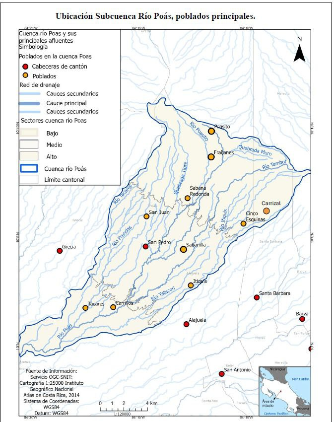
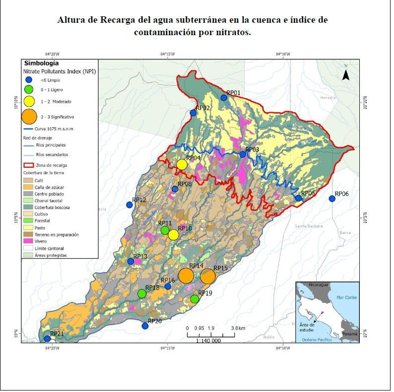
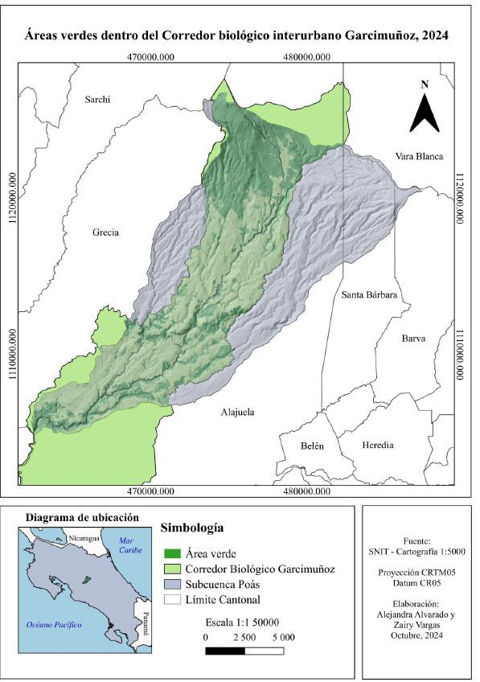

The Poás canton is guardian of one of Costa Rica's most valuable resources: water. Its forests, rivers and aquifers supply millions of people.
The Poás massif recharges three aquifer systems that supply drinking water to the Greater Metropolitan Area.
Aquifer located in the upper part of the canton, in the area closest to Poás Volcano. It is the main source of water for the ASADAs, the Municipality of Poás and the city of Alajuela, through wells and springs. It is recharged through porous volcanic soils and the cloud forest, but shows high vulnerability to contamination from agricultural and livestock activities in the sub-basin.
One of the most important aquifers in Costa Rica. It receives recharge from the Poás massif and supplies a large part of the Central Valley. It is a key source for SENARA and AyA for the provinces of Heredia and Alajuela.
Located beneath the slopes of the Barva-Poás massif, this unconfined aquifer is recharged by rain filtering through porous volcanic soils. It supplies communities in the northern Greater Metropolitan Area and part of Heredia.
From the volcano spring rivers that irrigate the canton and supply downstream communities.
The Communal Aqueduct and Sewerage Management Associations are the cornerstone of water access in Poás.
The ASADAs of the upper Poás River basin manage communal aqueducts that deliver drinking water directly from natural sources to homes. They are non-profit organisations run by the communities themselves, under the supervision of AyA (Costa Rican Institute of Aqueducts and Sewers). Their work is essential for preserving both water quality and the health of springs and recharge zones.
Technical and contextual information about the canton's water system.
The canton is located within the Grande de Tárcoles River sub-basin, which drains the Central Valley's waters to its outlet on the Pacific Ocean. It has a territorial area of 73.84 km², spread across a strip approximately 15 km long by 5 km wide, with elevations ranging from 600 m a.s.l. in Rincón de Carrillos to 2,838 m a.s.l. in Poás Volcano National Park.
The courses of the Poasito and Poás rivers define the eastern boundary with the canton of Alajuela, while the Achiote, Tacares and Prendas rivers define the western boundary with the canton of Grecia.
With Grecia, Poás shares the sub-basins of the Tacares and Prendas rivers — an area of great abundance of groundwater, springs and water intakes, including the Los Chorros spring, located in the protected area of the same name.
Located between Barva volcano and Poás volcano, down to the confluence with the Grande River near Alajuela. It has high potential for the formation of high-quality aquifers.
Over the past 14 years, water production in the micro-watershed has increased by 1.6%, specifically in runoff and hydrological gain.
Water for human consumption comes from wells and springs, primarily from the Poás aquifer. Despite the intrinsic vulnerability of this aquifer to contamination, livestock and agricultural activities have been developed across a large part of the sub-basin's territory.
Population centres primarily use septic tanks as sanitation systems, which represents a contamination risk for both groundwater and surface water.
The micro-watershed has a socioeconomic structure based on agro-productive activities: cattle ranching, poultry farms, sugarcane, coffee and non-traditional crops such as flowers, strawberries and vegetables, which exert pressure on water resources.
Six socio-environmental pressures with a negative impact on water were identified, originating from both households and productive activities. Despite this, water quality parameters showed majority compliance with established quality criteria.
Flash floods and landslides are associated with the presence of deeply incised river valleys with steep slopes in elongated micro-watersheds over recent volcanic deposits.
Identified risks range from volcanic eruptions, tectonic faults and landslides to human-induced threats that have caused degradation and contamination of soils and surface and groundwater.
Understanding the risks is the first step to protecting the canton's water.
Changes in rainfall patterns affect aquifer recharge and reduce river and stream flows during the dry season.
Soil sealing from construction reduces water infiltration and contaminates aquifers with wastewater.
Excessive use of fertilisers and pesticides in highland farming areas can contaminate springs and underground aquifers.
Eruptions from Poás can temporarily affect water quality through acidification and emission of sulphurous gases.
Loss of forest cover in recharge zones reduces the soil's capacity to capture and filter rainwater.
Improper disposal of solid waste and sewage in river basins degrades the quality of water resources.
Anthropogenic impacts from urban development, including overexploitation for water supply and contamination from discharges.
Technical maps on the watershed, recharge zones and biodiversity of the Poás canton.

Shows the delimitation of the Río Poás sub-watershed, its main tributaries (Río Poasito, Quebrada Tigre, Río Tacares, Río Tatacón) and the towns within it: Poasito, Fraijanes, San Juan, San Pedro and Carrillos. Divides the watershed into upper, middle and lower sectors. Source: OGC-SNIT / IGN, scale 1:120,000.

Identifies groundwater recharge zones above the 1,675 m.a.s.l. contour and the level of nitrate contamination at 21 sampling points (RP01–RP21), classified from clean to significant. Reflects the pressure of agricultural and livestock activities on the aquifers. Scale 1:140,000.

Delimits the green areas and forest cover within the Garcimuñoz Interurban Biological Corridor, which crosses the Poás sub-watershed. This corridor plays a key role in ecological connectivity and protection of hydrological recharge zones. Source: SNIT, cartography 1:5,000. Prepared by Alejandra Alvarado and Zairy Vargas, October 2024.
The hydrological heritage of Poás is everyone's responsibility. Learn more about the canton and its natural resources.